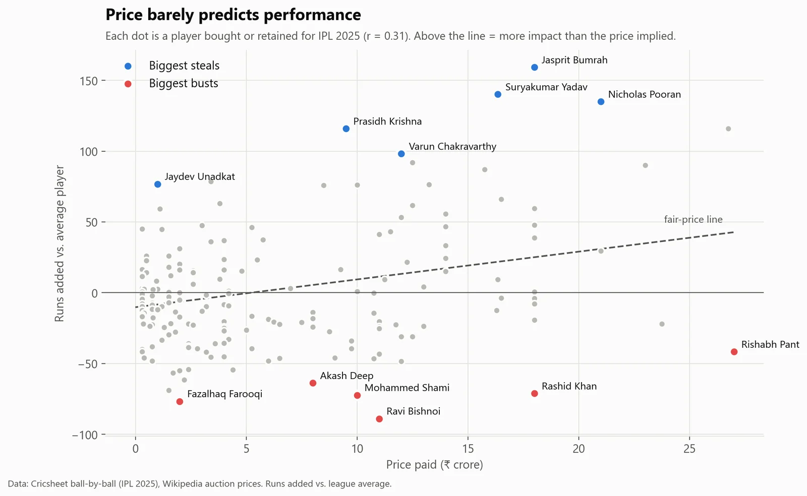

Moneyball IPL: which ₹‑crore buys were busts, and which were steals?
Price explained only about a tenth of what players actually delivered. Jasprit Bumrah and ₹1‑crore Jaydev Unadkat were steals. ₹27‑crore Rishabh Pant was among the costliest flops.
- 10%of on-field impact explained by price
- 36%of budget buys never played a match
- r = 0.73my metric against team win rates
Built a "runs added" metric from every ball of the season in SQL, matched 226 auction prices to scorecard names, and checked that the metric predicts winning before trusting it.
Code & write-up